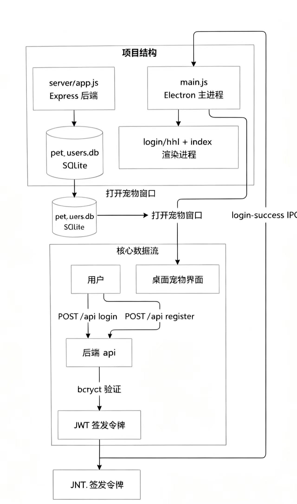
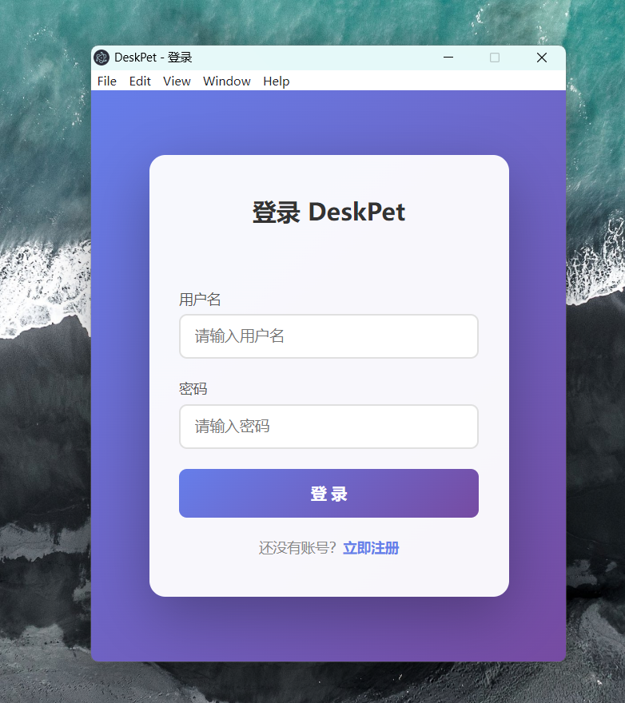
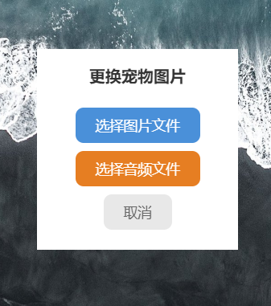

01
跨平台 AI 桌面宠物全栈开发
Electron · 全栈
项目简介
针对传统桌面应用功能单一、缺少智能交互能力的问题，设计并开发一款跨平台 AI 桌面宠物应用，实现桌面端交互、用户管理、数据存储及 AI 能力融合。
项目背景
传统桌面应用功能单一、缺少智能交互能力，无法满足用户对轻量级智能陪伴工具的需求。
问题定义
现有桌面应用缺乏 AI 交互能力，数据管理与服务端架构相对薄弱。
解决方案
独立完成 Electron 桌面端与 Web 服务端整体架构设计，基于 Node.js 搭建后端服务，实现用户认证、SQLite 数据持久化及前后端通信机制；结合 OpenCode 辅助开发流程，引入 DeepSeek API 实现 AI 交互能力。
技术实现
ElectronNode.jsExpressSQLiteJWTIPC 通信DeepSeek APIOpenCode
项目亮点
- 完成从需求分析、架构设计到功能实现的完整开发流程
- 实现 Windows 平台桌面应用部署运行
- 积累 AI 应用与全栈开发实践经验
项目价值
形成完整的 AI 桌面应用开发闭环，覆盖前端、后端、数据持久化与智能交互。
个人贡献
独立完成 Electron 桌面端与 Web 服务端整体架构设计；基于 Node.js 搭建后端服务，实现用户认证、SQLite 数据持久化及前后端通信机制；结合 OpenCode 引入 DeepSeek API，完成客户端功能模块设计、接口调试及系统联调。



PRD 摘要（产品需求文档.pdf）
文档包含项目背景、用户角色、功能需求（注册 / 登录 / 宠物交互）、非功能性需求与验收标准。核心数据流：用户 → POST /api/register|login → 后端 bcrypt 验证 → JWT 签发令牌 → login-success IPC → 主进程打开宠物窗口；存储层由 pet_users.db（SQLite）承载。
⬇ 下载产品需求文档（PDF）